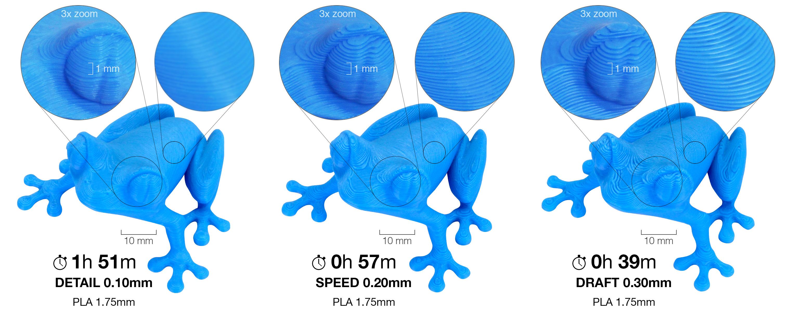
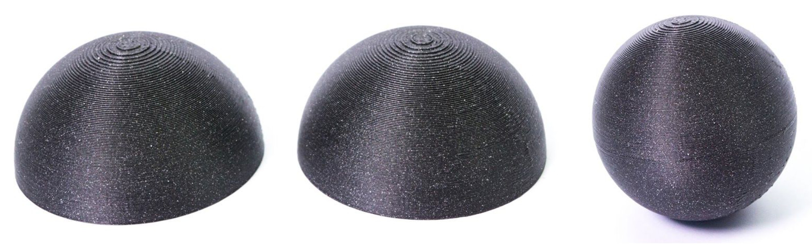
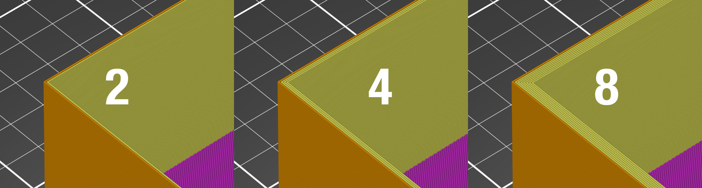
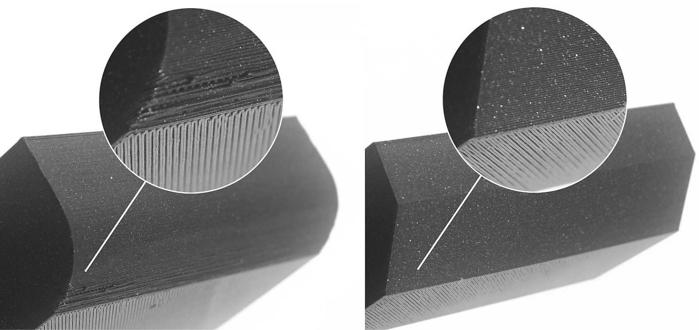

Impresión 3D para narices, aletas y útiles
Preparar una pieza para imprimir, revisar su orientación y distinguir aspecto exterior de ajuste funcional.
De un archivo bonito a una pieza útil
El archivo CAD define la geometría. El laminador la transforma en capas y trayectorias para una impresora concreta. La pieza física añade variaciones de dimensiones y de acabado. Por eso conservaremos el CAD, el proyecto del laminador y el identificador de la impresión. Un archivo STL por sí solo no explica cómo se fabricó la pieza.

Archivos con funciones diferentes
| Archivo o registro | Para qué sirve |
|---|---|
| CAD editable | Cambiar cotas y relaciones |
| STL u otro formato de malla | Compartir la geometría exterior |
| Proyecto del laminador | Conservar orientación y perfil |
| Registro de impresión | Relacionar máquina, material y pieza |
En esta clase usaremos una nariz, una muestra de encaje o un útil. Las piezas relacionadas con el motor comercial se resuelven con componentes y documentación apropiados al conjunto. La impresión de aula no reemplaza esos requisitos.
En impresión por filamento, la pieza se forma mediante trayectorias sucesivas de material. El modelo CAD describe la geometría; el laminador decide cómo convertirla en capas y recorridos. Una superficie inclinada puede quedar escalonada y una cavidad puede necesitar una estrategia que permita fabricarla. Mirar la pieza desde el lado de la cama ayuda a anticipar qué superficies se apoyarán, cuáles quedarán libres y dónde habrá que retirar material auxiliar.
La orientación cambia lo que se fabrica

Al apilar capas se forma una pieza con direcciones de fabricación reconocibles. Una zona inclinada puede mostrar escalones. Un saliente puede necesitar apoyo. La orientación también determina qué superficies quedan contra la cama y dónde aparecen marcas al retirar soportes. Esos detalles importan si la superficie debe encajar o servir de referencia.
Antes de elegir la orientación
| Zona de la pieza | Qué observar en el laminador |
|---|---|
| Hombro de nariz | Superficie que debe entrar en el tubo |
| Raíz de aleta | Continuidad y orientación de capas |
| Útil de montaje | Superficies que fijan posición |
| Punta o borde fino | Trayectorias que realmente se generan |
No se propone una orientación universal para todas las narices o aletas. El equipo debe justificarla según la pieza y verificar el resultado. Una orientación que mejora un acabado puede empeorar el apoyo o la zona que recibe esfuerzos. [PR1]
Cambiar la orientación modifica la forma de construir la misma geometría. También puede modificar la calidad de una abertura, el acabado de una cara y la necesidad de soportes. En una nariz interesa revisar su base y su interfaz con el tubo. En un útil interesa que las superficies de referencia conserven su función. Se comparan pequeñas muestras porque la orientación visualmente más cómoda no siempre produce el mejor encaje. La decisión se conserva junto al perfil que la hizo posible.
Paredes, relleno y masa

Los perímetros recorren el contorno. El relleno ocupa parte de las zonas interiores que el modelo y el perfil permiten rellenar. En una pieza hueca, agregar relleno no sustituye una pared mal dibujada. En una pieza maciza puede aumentar masa y tiempo sin resolver el problema que realmente teníamos. La vista por capas permite ver qué está pasando.
Dos perfiles del mismo útil
Ejercicio: perfil A estima 18 g y 55 min; perfil B estima 24 g y 78 min. El equipo solo necesita que el útil conserve la posición en un montaje de banco.
Razonamiento del caso
Hay 6 g y 23 min de diferencia por pieza. La decisión exige comprobar la función del útil. No se puede declarar B superior solo por usar más material. Las cifras del laminador son estimaciones hasta que se fabrica y registra el resultado.
No fijamos aquí porcentajes o espesores universales de impresión para piezas de vuelo. Trabajamos con el perfil compatible con la impresora y la pieza, revisado por el docente. Se comparan dos cambios identificados y una función verificable. [PR2]
Al importar una malla, comprueba una dimensión conocida antes de tocar el perfil. Un error de escala puede convertir una pieza pequeña en otra mucho mayor sin cambiar su aspecto en pantalla. El contorno sigue siendo parecido y por eso el error pasa desapercibido. La lectura de una longitud de referencia y de la unidad evita perder una tanda completa de impresión. Guarda el archivo original y documenta cualquier conversión realizada.
Práctica en el laminador
- Importa la muestra de encaje o el útil aprobado por el docente. Comprueba las dimensiones generales antes de escalar.
- Coloca la orientación propuesta y revisa si necesita apoyos. Observa la superficie que debe quedar funcional.
- Usa el perfil de máquina y material del taller. Guarda una primera versión del proyecto del laminador.
- Recorre las capas y busca paredes ausentes, zonas desconectadas o bordes que no se imprimen como esperabas.
- Registra tiempo y masa estimados. Prepara una segunda versión cambiando una sola decisión de fabricación.
- Entrega ambas vistas por capas y explica qué verificarás en la pieza física.

Si una pared desaparece en la vista por capas, revisa el modelo y el perfil antes de imprimir. Ver la silueta exterior completa no garantiza que se vayan a depositar todas las trayectorias necesarias.
La vista por capas permite comprobar que la máquina realmente fabricará los detalles que dibujaste. Una pared muy fina puede desaparecer o convertirse en una trayectoria distinta de la esperada. Antes de imprimir, recorre el inicio, una zona intermedia y el cierre de la pieza. Busca continuidad de paredes y apoyos. El tiempo y la masa estimados sirven para organizar el trabajo, mientras la pieza física permite comprobar dimensiones y función.
Organizar la cola de impresión del curso
Una impresora es un recurso compartido. Para seis equipos conviene imprimir primero muestras cortas que respondan una pregunta: encaje, borde o alineación. Las piezas completas llegan después de esa revisión. El tiempo de clase no tiene que consumirse esperando una impresión que nadie comprobó en pantalla.
Orden de trabajo propuesto
| Prioridad | Pieza | Motivo |
|---|---|---|
| 1 | Muestra corta de encaje | Evitar repetir una nariz completa |
| 2 | Muestra de raíz o útil | Comprobar referencia y posición |
| 3 | Pieza completa revisada | Fabricar con decisiones registradas |
| 4 | Repuesto identificado | Preparar continuidad del taller |
Planificar una tanda
Ejercicio: seis muestras de 8 min requieren al menos 48 min de impresión. Si cada nariz completa requiere 50 min, seis narices requieren al menos 300 min, sin cambios ni incidencias.
Razonamiento del caso
La muestra puede ahorrar una repetición larga, pero no elimina preparación ni revisión. El docente reserva tiempo de máquina fuera de las horas lectivas y conserva material de contingencia.
- Nombra la solicitud con equipo, pieza y revisión.
- Incluye el material y la función que debe comprobarse.
- Añade tiempo estimado y la fecha en que se necesita la pieza.
- Después de fabricar, pesa, mide y registra el resultado sin sustituirlo por la estimación del laminador.
El tiempo estimado de una tanda tampoco incluye necesariamente preparación, enfriamiento, retirada y revisión. La cola del curso debe reservar esas tareas y contemplar la repetición de una muestra. Si el docente necesita comparar orientaciones, identifica cuál corresponde a cada objeto antes de retirarlos de la máquina. Dos piezas sueltas sin etiqueta pierden buena parte del valor de la prueba, aunque ambas parezcan bien impresas.
Aceptar una impresión por su función
La inspección comienza con la pieza que tenemos: identificación, dimensiones, acabado funcional y defectos visibles. Una superficie bonita puede ocultar una unión entre capas deficiente. Una marca estética puede no afectar un útil de banco. El criterio se define por lo que la pieza debe hacer y por su integración en el conjunto.
Decisiones ante un defecto
| Observación | Primer paso razonable |
|---|---|
| El encaje no entra | Medir pieza y abertura; revisar borde |
| La raíz está deformada | Comparar con el plano y revisar orientación |
| La pared tiene una separación | Detener aceptación y revisar proceso |
| El útil tiene una marca exterior | Comprobar si altera su referencia funcional |
La revisión no termina con “salió bien”. Se necesita al menos una medida y una prueba ligada a la función. Para el útil, presentar las piezas; para el encaje, probar el tubo identificado. El docente decide la aceptación de las piezas del vehículo con el conjunto completo y las comprobaciones previstas.
Conclusión del equipo
La muestra pesa 4,2 g cuando el laminador estimó 3,8 g y el encaje observado es correcto.
Razonamiento del caso
Registra ambas masas con su origen. Conserva el resultado de encaje como evidencia de esa interfaz. No alteres la balanza ni el dato para que coincidan; la diferencia ayuda a mejorar el modelo de fabricación.
Preguntas de cierre
¿Un STL conserva todas las decisiones del laminador?
No. Hace falta el proyecto del laminador y el perfil utilizado.
¿Más relleno siempre significa mejor pieza?
No. Debe resolver una función y verificarse en la pieza.
¿La masa estimada reemplaza a la medida?
No. Se conservan ambas con su procedencia.
Entrega
Proyecto de laminador, comparación y solicitud de impresión.
Bibliografía y procedencia
[PR1] Prusa Research. Modeling with 3D printing in mind.
[PR2] Prusa Research. Layers and perimeters.
[PLA] Prusa Research. PLA.
[PETG] Prusa Research. PETG.